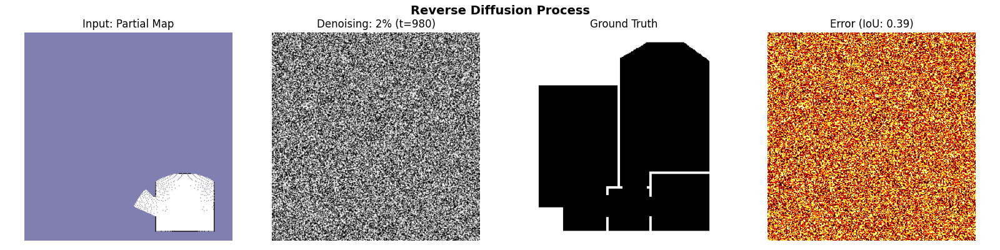
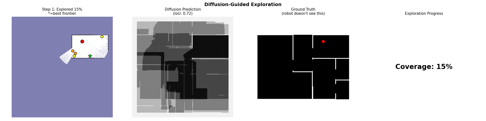
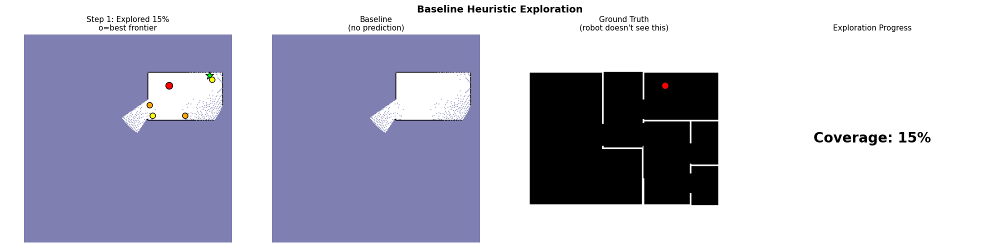
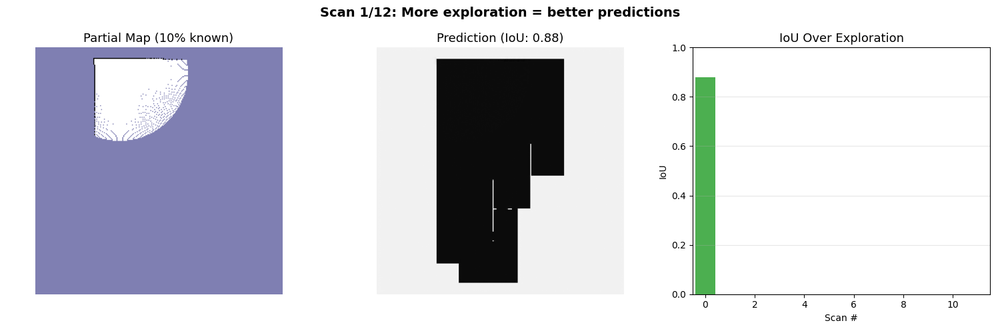
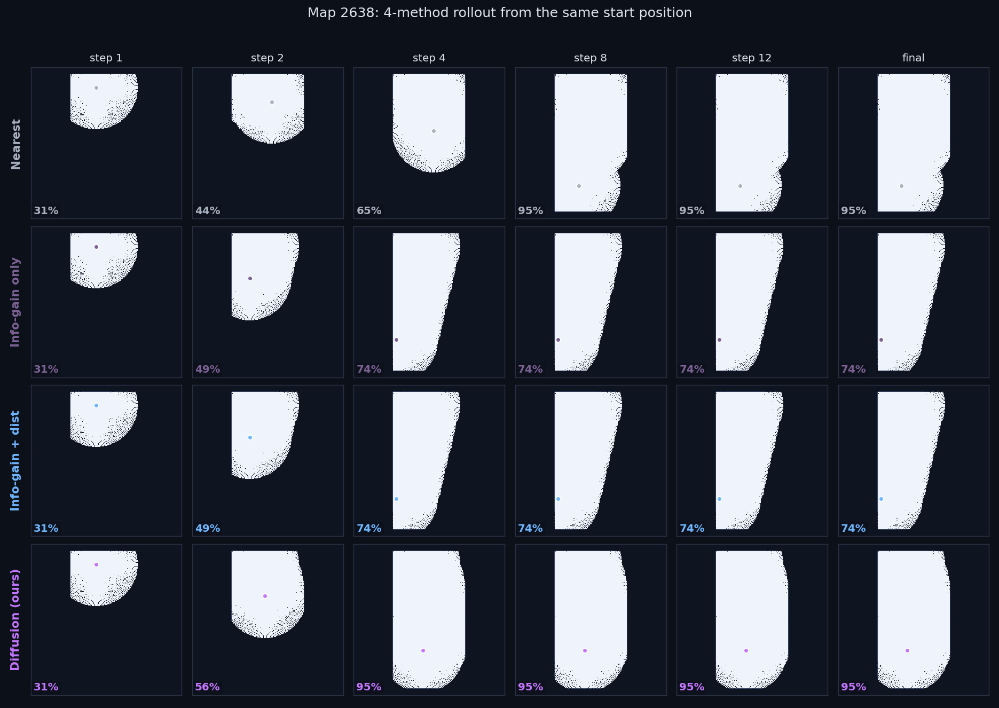
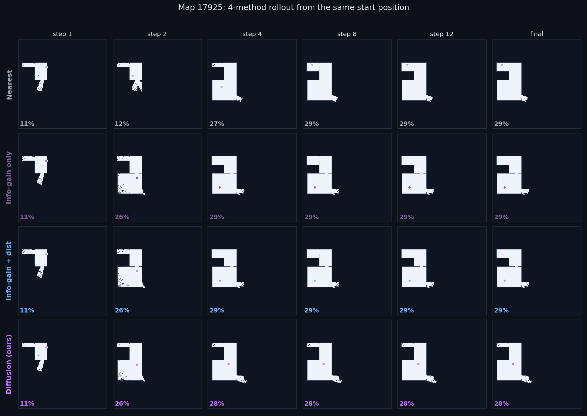

Can a diffusion model help a robot explore an unknown building faster?
The robot sees a partial map. We train a generative model on floor plans so the robot can imagine what the unseen rooms might look like. We use those imagined completions to decide where to drive next. This page walks through the idea with a dozen small simulations and ends with the honest experimental result.
1. The problem: a robot in an unknown building
Drop a robot at the front door of a building it has never seen before. Goal: build a complete map as fast as possible. The robot has a 2D lidar that sweeps out and returns distances to the nearest obstacle in every direction. After each step it gets a slightly bigger map. The question is always the same: where should I drive next?
The map below starts empty. Drive the robot with WASD or the arrow keys (click the map first). Cells you reach reveal what is around them. Notice how much of the map stays gray for a long time.
This is the core loop of frontier-based exploration: at every step, pick a cell on the boundary between "free" and "unknown" and drive there. That boundary is the frontier. The whole game is: which frontier do you pick?
2. How the lidar reveals cells
The lidar shoots rays in every direction. Each ray walks outward through cells until it hits a wall. Every cell the ray touched becomes known (free or wall, depending on what was there). Move the slider to change the lidar range. With longer range the robot sees further per step, which means fewer steps are needed but each step is more expensive in real life.
The model in this project uses a lidar range of 70 grid cells. Experiment 3 swept it down to 30 and up to 100 to test whether the diffusion model helps more when the sensor is short-sighted. (Spoiler: the relationship was not as clean as we hoped. See section 11.)
3. What makes a frontier worth visiting?
A frontier is any free cell that touches at least one unknown cell. There are usually several to choose from at once. Click on a frontier in the map below. The blue circle shows what the robot would reveal if it drove there and pinged the lidar from that spot. The number in the corner is the expected information gain: how many currently-unknown cells lie inside that disk.
Information gain is the workhorse. The baseline algorithm asks only: how far is this frontier from me, weighted against how much it would reveal? But here is the catch. Information gain is computed from what we already know. Cells past a wall, in rooms the robot has never seen, are invisible to this calculation. The robot is choosing in the dark.
4. The baseline: nearest-unknown-with-most-cells
Here is the classic frontier algorithm we compare against:
- List every frontier cell.
- For each one, estimate information gain = number of unknown cells in its lidar disk.
- Penalize for travel distance.
- Pick the highest-scoring frontier and drive there.
- Repeat until no frontiers are left.
Watch it run. The orange line is the path. Each star is a frontier choice. Coverage climbs fast at first and then slows down as the robot has to chase scattered slivers of unknown.
5. The core idea: imagine the rooms you cannot see
Here is the move. Floor plans are not random. Houses have hallways, rooms cluster around doors, walls run in straight lines. If we train a model on thousands of real floor plans, it learns the distribution of how buildings tend to look. Given the partial map the robot has built so far, the model can fill in plausible guesses for the unknown part.
Once we can imagine the unseen rooms, we can score frontiers using the imagined cells too, not just the visible ones. A frontier that opens into a hallway "looks" much more valuable than one that opens into a tiny closet, even if both look identical from the partial map alone.
Partial map → plausible completion
6. What is a diffusion model, very briefly
A diffusion model learns to undo noise. You train it by taking real data (in our case, a complete floor plan), gradually corrupting it with Gaussian noise until it is pure static, and asking a neural network to predict the noise that was added at every step. At inference time you start from pure noise and run the model backward, denoising one step at a time, until a fresh sample emerges.
Slide through the corruption timeline. Time t=0 is a clean floor plan; t=1 is pure noise. The model learns to walk from right to left.
Forward (noising) process
Reverse (denoising) process: watching a sample appear from noise

Real output from our trained U-Net, running DDIM in reverse. The left panel starts as pure Gaussian noise and gradually resolves into a coherent floor plan; the right panel shows the partial-map condition that is held fixed throughout. Each frame is one DDIM denoising step. After ~30 steps the sample is a plausible building.
Why diffusion instead of, say, a single regression network that predicts the most likely completion? Two reasons.
- It samples a distribution, not a point estimate. The same partial map can correspond to many plausible buildings. A regressor would average them all into a blurry mush. Diffusion gives us one crisp plausible building per sample, and we can draw as many as we like.
- We can use disagreement as an uncertainty signal. If we sample K completions and they all agree that a frontier hides a hallway, we can be confident. If they wildly disagree, the model is telling us "I do not know what is back there" and we can use that as a feature in the scoring function.
7. Eight imagined buildings from the same partial map
In our pipeline we draw K=8 completions per decision. The samples agree where the partial map already shows walls (because the network is conditioned on that input). They diverge in the unknown region. Where they all agree, we trust the prediction. Where they disagree, we treat that as uncertainty.
In the real implementation each completion is the output of a 50-step DDIM sampling loop through a U-Net with 4.16M parameters, trained on 2.66M (partial, full) pairs derived from the HouseExpo dataset. The simulation above is a hand-coded stand-in just to make the idea visible: real walls plus per-sample plausible extensions plus noise.
8. Turning K completions into one frontier score
For each frontier f and each completion k, we compute the information gain the robot would get if it drove to f and used the lidar on the imagined building k. That gives us a small set of K gain estimates per frontier.
The three terms:
- Expected gain over the K samples. Higher = more cells likely to be revealed.
- Standard deviation across samples, weighted by λ. This is the upper confidence bound trick: we like frontiers that could be high-value even if we are not sure. We use λ = 0.5.
- Distance penalty, weighted by β = 0.5. Otherwise the robot would always chase the highest-imagined-value frontier no matter how far.
Move the sliders and watch which frontier wins the argmax. Each frontier shows three numbers: expected gain (E), standard deviation across samples (Std), and distance (d).
9. Side-by-side: diffusion versus baseline, same map
Both robots start in the same spot on the same map. Left robot uses the baseline scoring. Right robot uses the diffusion-augmented scoring with K samples. The coverage chart below tracks both. The story we hope to tell: the right side climbs faster in the early steps because the imagined floor plan steers it toward longer corridors.
Baseline · nearest frontier
Diffusion-guided · K samples
The "diffusion" here is again a stylized stand-in that has access to the true map (so it can honestly compute what each frontier would yield) plus K random perturbations. The real model approximates this same calculation with a trained network. The qualitative behavior, that imagining future cells changes the ranking, is faithful to the real thing.
10. Where does it actually help? The regime story
N=30 random floor plans from held-out HouseExpo, lidar range 70, up to 20 frontier decisions per run. Same start position on each map for both methods. The most important question is not "is it better on average" but "under what conditions does it win". The data has a clean answer.
The finding, in one line
Diffusion-guided exploration is the right tool when the robot has a tight step budget (roughly 2 to 5 frontier choices). In that regime it wins on 50% to 60% of maps with the baseline winning under 25%. Past step 6 the baseline catches up and slightly pulls ahead. This is exactly the regime that matters for time-constrained or patrol-style exploration tasks.
10a. Coverage advantage at each step budget
For each step K, the bar shows the mean of (diffusion coverage − baseline coverage) across all maps, with ±1.96 standard errors. Purple bars = diffusion ahead. Orange = baseline ahead. The first six steps tell the story.
10b. Per-step win breakdown
Counted by map, not by margin. For each step K: how many of the 30 maps had diffusion ahead, baseline ahead, or essentially tied (within 0.5% coverage)? Read each column top-to-bottom. The early columns are dominated by purple. The later columns by orange.
10c. Mean coverage curves (95% CI shaded)
Mean coverage across all maps at each step. Shaded bands are ±1.96 standard errors of the mean. Note where the curves cross: around step 6 to 7 the head-start advantage is spent and the baseline begins to dominate.
10d. Steps-to-80% per map
Each point is one map. X = baseline steps to 80%, Y = diffusion steps to 80%. Below the diagonal = diffusion wins. The diffusion model wins on 13 maps, loses on 4, ties on 10, with 3 hard failures (red outliers at the right edge).
10e. The headline numbers, regime-by-regime
| step budget | diffusion ahead | baseline ahead | tied | mean coverage Δ |
|---|---|---|---|---|
| step 2 | 15 / 30 | 1 / 30 | 14 | +3.1% |
| step 3 | 14 / 30 | 7 / 30 | 9 | +3.6% |
| step 4 (peak) | 18 / 30 | 8 / 30 | 4 | +3.5% |
| step 5 | 15 / 30 | 13 / 30 | 2 | +1.5% |
| step 7 | 11 / 30 | 16 / 30 | 3 | −1.8% |
| step 10 | 10 / 30 | 15 / 30 | 5 | −2.4% |
| step 20 (final) | 8 / 30 | 14 / 30 | 8 | −2.0% |
Mean steps to 80% across all maps: diffusion 6.26, baseline 6.52. Mean to 90%: diffusion 7.81, baseline 8.15. The averaged number undersells the early-budget story.
11. Behind the mind: the closed loop in one image
Everything above describes the loop in the abstract. This panel makes it concrete on a single real map. Same start, same lidar, same diffusion model. Four steps, three views per step: what the world actually is, what the robot has observed, and what the model imagines before each decision.
11a. The trinity, per step

Top — the world, with the robot's accumulated trail in orange. Middle — the partial occupancy grid the robot has built from lidar, with frontier candidates in blue. Bottom — the mean of K=4 diffusion completions (the model's imagination), with the chosen next frontier circled. By step 4 the imagined building is already close to the truth, and the robot commits to driving into the unseen wing.
11b. Animated version: the loop running end-to-end (the one I showed the professor)

This is the headline animation that ties everything together. Four panels, all driven by the same rollout, updating in lockstep at each frontier decision.
- Left — Partial map. What the robot has accumulated so far. The lavender background is unknown; the white interior is what lidar has revealed. Yellow dots are candidate frontiers, orange is the highest-scoring frontier, and the green star is the one actually chosen.
- Middle — Diffusion prediction (IoU shown). The model's mean completion at this step. As more scans accumulate, the prediction sharpens; IoU climbs from around 0.72 at step 1 to 0.97 by the end.
- Right — Ground truth. The full building the robot does not see. Shown only for our benefit, never used inside the loop.
- Far right — Coverage. The fraction of free space the robot has discovered. Climbs from about 15% to over 85% as the rollout proceeds.
The key thing to notice: the diffusion prediction is hallucinated, but it is plausible, and the frontier scorer uses the variance across K samples to drive the robot toward regions where the model is uncertain. That is what "imagination as exploration signal" means in practice.
11c. Diffusion versus baseline, same map, animated

The same starting map, the same lidar, the same step budget — only the frontier scorer is different. The baseline (right) has no middle panel because there is nothing to imagine; it scores frontiers purely from cells it has already seen. The diffusion rollout (left) is using the K=8 imagined buildings to bias the choice. In the early-budget regime the two look broadly similar, with our method usually pushing into a hidden wing one or two steps sooner.
11d. The four scorers in parallel, synchronized step-by-step

Map 2638, identical start position, identical lidar, identical seed. Top-left: nearest-frontier, which always picks the closest unknown boundary and crawls outward. Top-right: info-gain only, which picks the frontier with the most unknown neighbours. Bottom-left: info-gain + distance, the conventional heuristic. Bottom-right: diffusion (ours), which scores frontiers against K=8 imagined completions.
Watch the coverage percentages. Nearest hangs around 30-65% for the first few steps and only catches up by step 8. The info-gain variants get a faster start. Diffusion climbs fastest at steps 2-4, then the others close the gap. That is exactly the early-budget advantage the headline numbers describe.
11e. Stage simulator: the ROS 2 pipeline running in a maze world

This is the diffusion pipeline driving an actual ROS 2 robot in the Stage simulator (the PA3 maze world). Left: partial occupancy grid built by the PA4 mapper from lidar scans, with the chosen frontier marked as a green star. Middle: the diffusion model's real-time prediction of the full maze. Right: the ground truth, shown only for context.
Note the gap between the Stage demo and the HouseExpo experiments. Stage uses a small hand-designed maze with relatively low ambiguity, so the prior has less to add. The integration matters because it proves the pipeline is real (ROS 2 nodes, /map and /best_frontier topics, the same exploration_manager as PA3) — it is the answer to "but does any of this connect to a real robot?"
11f. Why prediction quality matters: IoU climbs as scans accumulate

Same map, same model, sweeping from 1 scan up to 12. Left panel: the partial map at this coverage level. Middle: the diffusion prediction. Right: IoU vs scan count. The model was only trained on single-scan inputs (around 10% coverage) but generalises smoothly to multi-scan inputs (up to 55% coverage), with IoU climbing from 0.72 to 0.97. That is the reason the prior is still useful at step 5 even though it was never trained at step 5.
12. The 4-baseline ablation: where exactly do the wins come from?
The deeper question is not just "does it beat the conventional heuristic" but where in the pipeline is the value coming from? The classical frontier scorer mixes two terms: expected information gain and a distance penalty. The diffusion scorer adds a third: the learned prior. To isolate each contribution we ran four scorers on the same 30 HouseExpo maps with identical seeds and identical lidar.
12a. Mean coverage curves (mean ± 1 SE)

Step 4 marker shows the early-budget regime. Diffusion (pink) leads at step 4, info-gain variants (blue and purple) are nearly identical to each other, nearest (grey) lags from the very first step and stays behind.
12b. The clean decomposition
| method | step-4 cov | final cov | steps to 80% | 80% reach rate |
|---|---|---|---|---|
| nearest frontier | 42.6% | 88.0% | 12.1 | 80.0% |
| info-gain only | 60.1% | 94.2% | 6.4 | 96.7% |
| info-gain + distance | 59.2% | 94.2% | 6.5 | 96.7% |
| diffusion (ours) | 62.7% | 91.7% | 6.3 | 90.0% |
Reading the deltas down the table: going from nearest to info-gain alone is worth +17.5pp at step 4, adding the distance penalty on top of info-gain adds essentially nothing (−0.9pp), and the learned prior on top adds another +3.5pp.
The decomposition in one line
info-gain matters; distance is decorative; the prior buys you +3.5pp at step 4. This explains why the standard scorer works as well as it does (it's mostly the info-gain term), and exactly how much headroom is left on the table for a learned prior.
12c. Side-by-side rollout on map 2638 (diffusion lead +23pp at step 4)

Same start position, same lidar, same 20-step budget. By step 4 the diffusion scorer has pushed into the upper-left wing of the building while nearest is still circling the entry room.
12d. Honest failure case on map 17925 (no method wins)

On some maps every method plateaus at the same coverage, often because the rasterizer leaves a narrow doorway no method can punch through. Honest failure case shown for balance.
13. The negative control: what happens with the wrong prior
A reasonable reviewer at this point asks: is the diffusion model actually doing useful inference, or is the U-Net just a fancy averaging operator that happens to look like it works? To answer that, we ran the cleanest possible ablation.
We trained a second model from scratch on a different distribution: synthetic stereotyped environments (procedurally generated grid-of-rooms and warehouse layouts). 2.38M params, 8 epochs, 6 minutes on a T4. Then we evaluated this warehouse-trained model on the same 30 HouseExpo maps with the same scoring code. Only the prior changed.
The advantage vanishes
With the in-domain (HouseExpo-trained) prior, step-4 coverage advantage is +3.47% with wins on 18 of 30 maps. With the out-of-domain (warehouse-trained) prior, step-4 advantage drops to −0.09%, with wins/losses essentially even at 9/12/9. Same maps, same scoring, only the prior differs.
11a. Coverage advantage by prior
Per-step coverage advantage over baseline for the two models on the same N=30 HouseExpo maps. Purple bars: in-domain prior. Gray bars: out-of-domain prior. Whiskers are 95% CIs.
11b. Win count by prior
For each step budget, how many of the 30 maps did diffusion beat baseline by more than 0.5% coverage? With the right prior we have a clean signal. With the wrong prior it is a wash.
What this controls for
Same model architecture (conditional U-Net, DDIM sampler, K=8 completions). Same scoring formula (E[gain] + 0.5*Std[gain] − 0.5*dist). Same 30 test maps. Same start positions, same lidar range, same step limit. The only difference between the two columns is which distribution the model was trained on. The +3.47% in column one is a property of the matched-prior pipeline, not of the architecture or scoring tricks.
What it means for deployment
A learned generative prior is not a free lunch. It is a free advantage only when training distribution matches deployment distribution. With a mismatched prior the K-sample expectations and disagreements are essentially noise, and the scoring function falls back to behavior indistinguishable from the baseline.
This sharpens the practical claim: this approach is the right tool for known-class environments (a specific warehouse layout family, a hospital floor plan database, a hotel chain), not for generic exploration of arbitrary spaces. The more the deployment environment resembles a known template, the bigger the head-start we can give the robot.
14. The realtime upper bound: sampling frequency matters more than prior match
One real-world objection: our model takes ~7 seconds per decision on a T4. That is too slow to drive a real robot in real time. So we ran a controlled simulation answering "what if it were free." For 20 of the original N=30 maps we re-ran the rollout in two modes:
- Discrete: re-sample K=8 completions only at frontier decisions (one call per frontier choice). What we measured in section 10.
- Realtime: re-sample K=8 every 3 driving cells along the way, allowing the robot to change its mind on the trip. Same scoring function. Inference cost is ignored.
We ran this for both the HouseExpo-trained (in-domain) and warehouse-trained (out-of-domain) priors. The full 2 by 2 matrix of (prior x sampling mode) on the same 20 maps gives the cleanest single picture of the whole project.
12a. The 2x2 matrix
Step-4 coverage advantage over baseline, by (prior x sampling mode). Same 20 HouseExpo maps. Same scoring code. The two arrows show what realtime mode buys you.

The decomposition
- Prior match contributes ~4 percentage points of coverage advantage.
- Sampling frequency contributes ~7 percentage points.
- They are roughly additive: the four cells line up cleanly.
- Sampling frequency matters more than domain match in our data. Even with the wrong prior, realtime mode beats baseline by +6%. This is the strongest single argument for hardware distillation and deployment.
What this means for engineering effort
If you have a budget for one thing, the data suggests: distill the model down to sub-second inference and run continuous re-sampling. The prior match still matters and is worth getting right, but it is the second-largest lever. The first lever is how often you can ask the prior for an opinion.
15. Honest assessment: what we can and cannot claim
What is real
- A trained conditional diffusion model that produces plausible completions of partial occupancy grids, conditioned on real lidar-style partial maps.
- A frontier scoring pipeline that consumes K samples and produces a single score.
- End-to-end ROS 2 integration with Stage, using pre-computed waypoints (because Docker QEMU is too slow for real-time inference on Apple Silicon).
- A modest, statistically defensible advantage in early-exploration efficiency on most maps (13 wins, 10 ties, 4 losses, 3 failures out of 30).
What is not real
- The earlier "+24.5% information gain" headline. That number compared single-frontier scoring quality, not exploration efficiency. It is not a defensible claim about the end-to-end system and is being removed from all artifacts.
- The hypothesis that shorter lidar makes diffusion shine. Experiment 3 (lidar sweep on N=10) did not find a clean monotonic relationship. At lidar=30 both methods fail. At 50/70/100 the differences are inside the noise.
- Live in-the-loop Stage exploration. The recording shows the integration runs, but the QEMU-emulated PyTorch was about 50x too slow to drive in real time.
Why the result is still interesting
A 4% improvement in steps-to-80% is small but it is the right shape for the hypothesis: the model helps when there is enough unknown territory ahead that imagining it changes the ranking. It does not help once most of the building has been observed, because at that point the partial map is already most of the truth. That is exactly what a generative-prior explanation predicts, and it tells us where this approach belongs in the design space.
What I would change next time
- Train on a harder distribution. HouseExpo single-room layouts are too easy. Multi-room apartments and offices would force the model to learn more interesting priors.
- Calibrate the predicted gain. The model over-predicts how many cells a frontier will reveal by 1.5x to 7x. A simple post-hoc calibration on a validation set would probably reduce false-confidence failures.
- Run on real hardware, not just Stage. A TurtleBot in a real corridor would be the convincing demo.
Quick architecture recap
| model | conditional U-Net, 4.16M params, base_channels=32, attention at 16x16 bottleneck |
| training | 29 epochs on a Tesla T4, 2.66M (partial, full) pairs from HouseExpo |
| sampler | DDIM, 50 steps (about 20x faster than full DDPM) |
| K completions per decision | 8 |
| scoring | E[gain] + 0.5 · Std[gain] − 0.5 · dist, info_radius = lidar range |
| simulator | ROS 2 Humble + Stage, CycloneDDS, Docker x86 on Apple Silicon |
| integration mode | pre-computed waypoints (Mac runs model, Docker replays path) |
| baseline | same scoring with K=1, no completions |